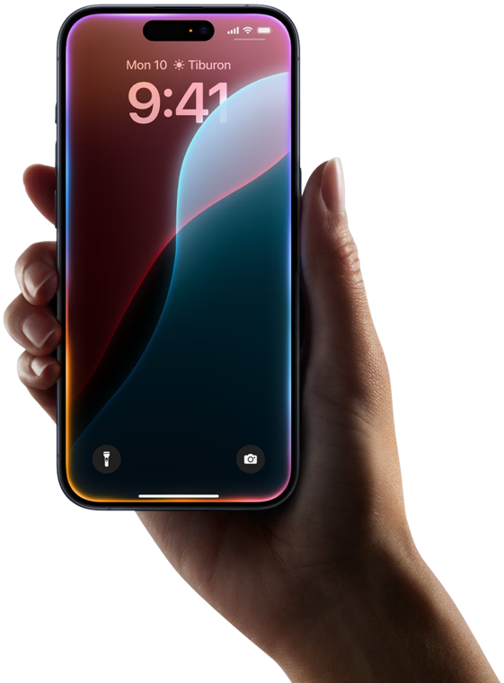

Tokyo'dan Kyoto'ya; günlük planın, biletlerin ve yol notların tek yerde.

Tren seçimi, açılış saatleri, JR Pass kapsamı, IC kartlar ve ryokan girişleri… Yola çıkmadan önce ayrıntıları tek tek araştırmak zorunda kalma.
Rotori, planlama ile yolculuk sırasında ihtiyaç duyacağın bilgileri aynı yerde toplar.
Rotori, sabitlediğin tarihleri korur ve kalan günleri şehirler arasında dengeli biçimde dağıtır.
Saatleri, yürüme mesafelerini ve yemek molalarını tek akışta gör. Plan değişirse durakları yeniden sırala.
Nozomi ile Hikari arasındaki farkı, hangi perona gideceğini ve bavulunu ne zaman göndereceğini planında gör.
Sıradaki durağı, yürüme süresini ve çıkış saatini kilit ekranında gör.
Rotori saatlik hava tahminine göre açık ve kapalı mekânları yeniden sıralar.
Rotori sunucuya yalnızca koordinat gönderir — başka hiçbir şey.
Fushimi Inari'yi sabah sakinliğinde, Dotonbori'yi neonlar yandığında gör. Rotori durakları uygun saatlere yerleştirir.
Beslenme tercihlerini bir kez seç. Rotori uygun restoranları bulur ve öğle ya da akşam planına ekler.
Otelden otele bavul transferi yaklaşık 2.000 ¥. Rotori, bavulu ne zaman teslim etmen gerektiğini planına ekler.
Ertesi gün teslim. Otel resepsiyonunda tek kelime yeter: "Takkyubin".
Liste; mevsime, çocukla seyahate, priz tipine ve JR Pass seçimine göre hazırlanır.
Haritaları yolculuktan önce indir. Planın, otel bilgilerin, biletlerin ve Japonca sesler çevrimdışıyken de yanında olsun.
Sık kullanılan 75 cümleyi Latin harfli okunuşu, Türkçe anlamı ve Japonca ses kaydıyla çevrimdışı kullan.
Rotori, seçtiğin bir noktada 10 dakika kaldığını cihazında algılar ve ziyareti kaydeder. Konum verisi sunucuya gönderilmez.
Pasaport, sigorta, eSIM, nakit ve otel adresi gibi önemli hazırlıkları tek listeden takip et.
Ziyaret ettiğin şehirleri, keşfettiğin yerleri, attığın adımları ve kazandığın rozetleri tek yerde gör.
Her seviye 100 XP · plan rozeti +50 XP · keşif rozeti +25 XP
Konum tabanlı keşifler cihazında işlenir. Hesabını ve kayıtlı verilerini uygulama içinden silebilirsin.
MVP sürümünde tüm özellikler ücretsiz. Reklam, abonelik ve uygulama içi satın alım yok.
Planın hazır olsun; yolculukta sıradaki adımı Rotori göstersin.
iPhone için · Ücretsiz · Türkçe & İngilizce
Sorun mu? destek@rotori.app